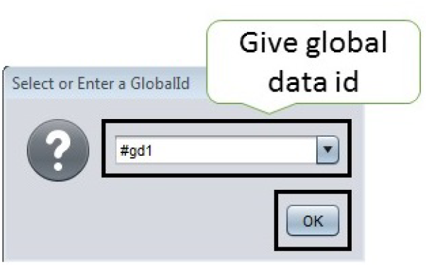
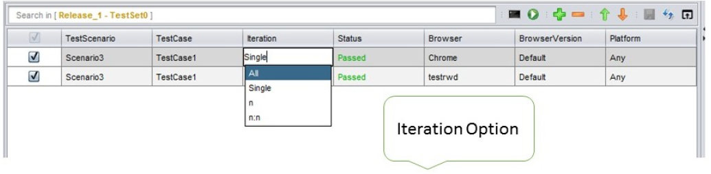

Good to know features
01. Global Data Sheets
For every project that is created in Cognizant Intelligent Test Scripter, a default global data sheet is generated. The data entered in the global data sheet can be referenced in any test data sheet within the project. This allows you to reuse the data across multiple test cases.
Where to use the Global Data?
Identify the Data column name which is common across multiple data sheets.

Select that data value and click on global data icon, as shown in the image above. Give the global data id, in the respective window, as shown below,

You will get the global id in the global data sheet, as shown below.

02. Rename a Project
To rename your project, right click on the project name from the Test Plan section and choose Details from the context menu option.
The Project Details window opens and the following options are available in the window, as shown below.

To rename your project, give the new name in the Project Name text box and click on Rename. Your project will be renamed.
The open option opens the project location in your system.
Right below these options, you have details on the total number of scenarios, test cases, reusable components and test data sheets present in the project.
03. Execute A Reusable For Specific Set Of Data
A reusable test case can be executed with a desired set of data by providing the sub iteration index in the Input column. It will fetch the data set from the data sheet with the desired index and use it within the test case. This is very useful when you want to execute the same reusable component, inside a single test case, with different set set of data passed each time.

04. Looping
NOTE: In Test Design panel, users are only given access to Iteration 1 and its various Subiterations

-
For the above image, Steps 11 to 18 will be executed 2 times (equal to the number of Sub iterations for Iteration 1)
-
For first iteration, data will be taken from Iteration 1 and Subiteration 1
-
For second iteration, data will be taken from Iteration 1 and Subiteration 2
-
To repeat an entire Test Case, keep Start Param in the first Step of your test Case and End Param in the last Step of your Test Case.
-
In the above image, we have used End Param:@1. This will execute Step 11 to 18, once and not twice.
-
To iterate through the entire Test Case for all the sub iterations of data in the data sheet, keep Start Param in the first step and End Param in the last step of your Test Case.
05. Iterations And Subiterations In Test Execution Panel
- NOTE: In the Test Execution panel, you are given access to all Iterations and their Sub iterations.

-
In the above image, there are some options given under the Iteration column
-
All: will Iterate through all your Iterations of your datasheet.
-
Single: will only Iterate through Iteration 1 of your datasheet.
-
n:n (Range): will Iterate through a range of iterations.
For example, if you use 2:5, then Cognizant Intelligent Test Scripter will only Iterate through Iteration 2 to Iteration 5 even if there are more iterations.
-
n: will allow you to Iterate a particular (nth) iteration in your datasheet.
For example, if you use 5, then Cognizant Intelligent Test Scripter iterate only the 5th iteration and all its sub iterations.
Note: Subiterations will work according to the definition of Start Param and End Param in the Test Design panel.
Looping Without Test Datasheet
- To repeat few steps, use Start Loop and End Loop:@n.

- In the above image, Start Loop is at Step 2 and End Loop:@5 is at Step 8. So, Step 2 to 8 will be repeated 5 times.
06. Handle Random Actions/Pop up Windows
In some applications, there may be components which will originate at random ie. the origination of such components cannot be predicted. This section will describe how to handle such components.
Logic
Since the origin of some components cannot be predicted, check for the availability of the respective component before or after performing each step.
How To Do It?
-
Open ther Engine in Eclipse IDE (or any IDE supporting java development).
-
Navigate to com.cognizant.cognizantits.engine.execution.run.
-
The following actions will be available in this class Annotation:
-
beforeStepExecution:Enter the code to handle the component here ,if you want to perform the check before the execution of each step.
-
afterStepExecution:Enter the code to handle the component here,if you want to perform the check after the execution of each step.
07. How To Navigate between Test Data Sheets?
-
Right click on any data sheet and choose the option Search Test Data from the context menu
-
In the Go To Test Data window, choose the test data sheet or the global data sheet to which you want to navigate
-
You will be navigated to the respective sheet after clicking on [OK]
08. How To Call AutoIT scripts in the tool?
To call any .exe file and execute the same directly from the UI, follow the procedure below :
- Create a test step, under the object name as App , action as openApp and give the path of the exe file under the Input column, as shown below.
Now when you run this script, the corresponding .exe file will be executed.
09. User Defined Variables
User Defined variables can be created and defined by two ways as given below.
-
Using the actions AddVar and AddGlobalVar. AddVar action will let you de􀂦ne a variable whose scope is throughout the execution of your test case and is valid for all the sub-iterations of the iteration 1 of your test case. But AddGlobalVar action will let you define a variable whose scope is throughout the execution of your test set.
-
Navigate to Configuration>Run Settings tab and provide your variable name and value under the Property Name and Value columns respectively, as shown in the screen shot below. Click on save for saving your settings.
These variables can now be used anywhere in your project, an example of which is shown below.
In addition to these, we have certain actions that take variables as input and will store the corresponding result in the variable provided.
10. How To Change Report Theme?
-
Go to Configuration>Options Theme.
-
From the Reporting theme, select a theme of your choice.
-
You can also toggle between Single* and Group View**.
-
You can choose which columns need to be displayed in the report.
-
Show or hide columns in the report using the show/hide columns option. Check the respective column name checkbox to display that column or uncheck the respective column name checkbox to hide it.
Filtering In Report
You can filter reports using Global Search or Column Search.
Sorting In Report
You can sort the reports using the up/down arrows beside each column name.
11. Generate Run Time Data
There are options available in the Input column to perform functions like rounding off numbers, generating a random number, concatenating strings, other arithmetic calculations and etc.
Follow the steps below to access those options.
-
Consider any action that requires Input column. For instance let us take the Print action. Instead of providing the URL directly, you can concatenate two strings that lead to the URL.
-
Consider the custom method below that uses the Data keyword which will process the concatenate function and open the URL.

Note: It is also possible to combine two relevant functions for optimum usage . For example,=Concat(Diaphragm,=Round(360.45)) in the input column will return the following result Diaphragm360.
12. Add Custom Functions For Run Time Data Generation
Navigate to :
com.cognizant.cognizantits.engine.util.data.fx; > Functions.java add your custom function as shown below. This is an example of creating a Trim function which will accept a String input and will return a trimmed output.
public Object Trim(String... args) {
String op = "";
try {
op = args[0].trim();
} catch (Exception ex) {
LOG.log(Level.SEVERE, ex.getMessage(), ex);
}
return op;
}
13. Enabling/Disabling screenshots for PASS/FAIL
In the report, you will be able to view the screenshots for the steps whose Status is PASS or FAIL. However, you have the option to enable/disable the screenshots for such steps.
-
In the Cognizant Intelligent Test Scripter UI, go to Configurations->Run Settings.
-
Under Screenshot section, you can check/uncheck the Pass or Fail checkboxes in order to enable/disable the screenshots in the report.
-
To enable/disable the screenshots for the entire page, check/uncheck the Take Full Page Screenshot checkbox.
Note: Give the status as PASSNS or FAILNS under the Report.updateTestLog() method for PASS status without screenshot or FAIL status without screenshot respectively.
14. Execution in debug mode.
You can debug the errors in your test case by adding breakpoints to the desired test steps and running the test case in debug mode.
-
Select the steps for which you wish to add a breakpoint, right click and choose Toggle Breakpoint.
-
Right click the Debug button (situated next to the run button), select the browser of your choice and click the Debug button.
-
Once the execution starts, the debug toolbar will appear on top of the screen as shown below. The execution will pause at the step where the breakpoint has been added. You can then debug your test case accordingly.

-
To view the console log, click the button.
-
To pause the execution of the test case, click the button. Once the execution has been paused, you can insert new succeeding steps in the test case or check the object properties using Object Heal and update them.
-
To resume the execution of the test case, click the button.
-
To move to the next step of the test case, click the button.
-
To stop the execution of the test case, click the button.
Note: In addition to adding breakpoints to the test steps, you can comment the selected test steps as well, by performing right click and choosing the option Toggle Comments.